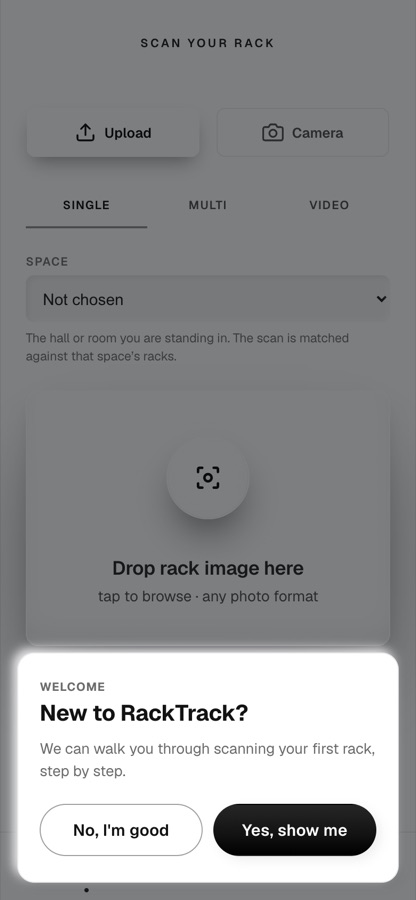

A1
Do this. Sign in to the RackTrack app as meridian.tech and look at Scan.
You should see. The space you are standing in is chosen before the photo, so the scan is matched against that space's racks. Look at the menu: a technician has no Approvals entry.
